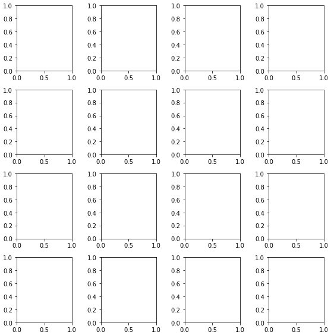

Improve subplot size/spacing with many subplots
I need to generate a whole bunch of vertically-stacked plots in matplotlib.
The result will be saved using savefig and viewed on a webpage, so I don't
care how tall the final image is, as long as the subplots are spaced so they
don't overlap.
No matter how big I allow the figure to be, the subplots always seem to overlap.
My code currently looks like
import matplotlib.pyplot as plt import my_other_module titles, x_lists, y_lists = my_other_module.get_data() fig = plt.figure(figsize=(10,60)) for i, y_list in enumerate(y_lists): plt.subplot(len(titles), 1, i) plt.xlabel("Some X label") plt.ylabel("Some Y label") plt.title(titles[i]) plt.plot(x_lists[i],y_list) fig.savefig('out.png', dpi=100)
Answer
Please review matplotlib: Tight Layout guide and try using
matplotlib.pyplot.tight_layout, or matplotlib.figure.Figure.tight_layout
As a quick example:
import matplotlib.pyplot as plt fig, axes = plt.subplots(nrows=4, ncols=4, figsize=(8, 8)) fig.tight_layout() # Or equivalently, "plt.tight_layout()" plt.show()
Without Tight Layout

With Tight Layout

Suggest
You can use plt.subplots_adjust to change the spacing between the subplots.
call signature:
subplots_adjust(left=None, bottom=None, right=None, top=None, wspace=None, hspace=None)
The parameter meanings (and suggested defaults) are:
left = 0.125 # the left side of the subplots of the figure right = 0.9 # the right side of the subplots of the figure bottom = 0.1 # the bottom of the subplots of the figure top = 0.9 # the top of the subplots of the figure wspace = 0.2 # the amount of width reserved for blank space between subplots hspace = 0.2 # the amount of height reserved for white space between subplots
The actual defaults are controlled by the rc file